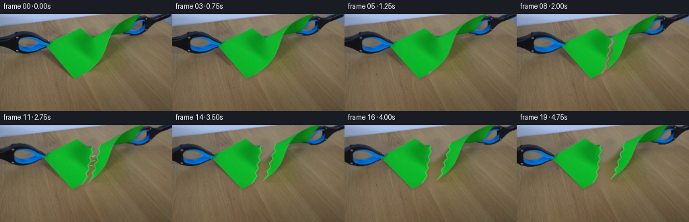
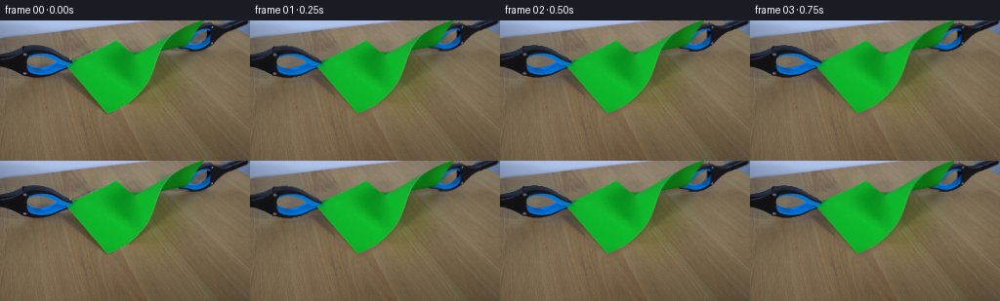

CODING AGENTS AS PIXEL WORLD MODELS
traex/GPT-5.6-Sol · 0043
点击播放 · 原生 RGB 像素
逐轮保存的候选
回放视频、检查图与代码变化。
每份候选均可单独播放。实际图片检查记录在下方工具轨迹中。
候选 01播放与检查图
点击播放 · 原生 RGB 像素


展开代码变化
--- 上一保存版本
+++ 本次保存版本
@@ -0,0 +1,192 @@
+"""Analytic continuation of the supplied frame: two grabbers tear the paper."""
+from pathlib import Path
+import cv2
+import numpy as np
+from PIL import Image
+import artifact_io
+
+ROOT = Path(__file__).resolve().parent
+H, W = 144, 256
+
+
+def smoothstep(x):
+ x = np.clip(x, 0.0, 1.0)
+ return x*x*(3.0-2.0*x)
+
+
+def alpha_over(dst, rgb, alpha):
+ a = alpha.astype(np.float32)[..., None] / 255.0
+ return np.clip(rgb.astype(np.float32)*a + dst.astype(np.float32)*(1-a), 0, 255).astype(np.uint8)
+
+
+def warp_layer(rgb, mask, M):
+ wrgb = cv2.warpAffine(rgb, M, (W,H), flags=cv2.INTER_LINEAR,
+ borderMode=cv2.BORDER_CONSTANT, borderValue=(0,0,0))
+ wmask = cv2.warpAffine(mask, M, (W,H), flags=cv2.INTER_LINEAR,
+ borderMode=cv2.BORDER_CONSTANT, borderValue=0)
+ return wrgb, wmask
+
+
+def affine_about(point, angle_deg, tx, ty, scale=1.0):
+ M = cv2.getRotationMatrix2D(tuple(map(float,point)), angle_deg, scale)
+ M[:,2] += (tx,ty)
+ return M.astype(np.float32)
+
+
+def shifted_scale_x(scale):
+ cx = 130.0
+ return np.array([[scale,0,cx*(1-scale)],[0,1,0]], np.float32)
+
+
+def main():
+ src = np.array(Image.open(ROOT/'first_frame.png').convert('RGB'), dtype=np.uint8)
+ assert src.shape == (H,W,3)
+ hsv = cv2.cvtColor(src, cv2.COLOR_RGB2HSV)
+
+ # The saturated green sheet is a single unambiguous component in the supplied frame.
+ green = ((hsv[...,0] >= 35) & (hsv[...,0] <= 92) &
+ (hsv[...,1] >= 72) & (hsv[...,2] >= 52)).astype(np.uint8)*255
+ n, labels, stats, _ = cv2.connectedComponentsWithStats(green)
+ paper_id = 1 + np.argmax(stats[1:, cv2.CC_STAT_AREA])
+ paper = (labels == paper_id).astype(np.uint8)*255
+ # Close pinholes in the paper texture, without changing its torn-looking silhouette.
+ paper = cv2.morphologyEx(paper, cv2.MORPH_CLOSE, np.ones((3,3),np.uint8), iterations=1)
+ paper = cv2.GaussianBlur(paper, (3,3), .48)
+
+ yy, xx = np.mgrid[:H,:W]
+ # Blue-black tool material. Restricting by two hand-localized ROIs avoids the bluish
+ # laboratory background while retaining both metal jaws and dark handles.
+ blueblack = (((hsv[...,0] >= 88) & (hsv[...,0] <= 142) &
+ (hsv[...,1] >= 47) & (hsv[...,2] <= 225)) |
+ ((hsv[...,2] <= 76) & (hsv[...,1] <= 210)))
+ lroi = (xx <= 78) & (yy >= 23) & (yy <= 61)
+ rpoly = np.zeros((H,W),np.uint8)
+ cv2.fillPoly(rpoly,[np.array([[181,31],[190,14],[202,0],[256,0],[256,17],[221,24],[207,33]],np.int32)],255)
+ raw_l = (blueblack & lroi).astype(np.uint8)*255
+ raw_r = (blueblack & (rpoly>0)).astype(np.uint8)*255
+ # Close tiny highlight gaps but preserve spaces between pincer tines.
+ tool_l = cv2.morphologyEx(raw_l, cv2.MORPH_CLOSE, np.ones((3,3),np.uint8), iterations=1)
+ tool_r = cv2.morphologyEx(raw_r, cv2.MORPH_CLOSE, np.ones((3,3),np.uint8), iterations=1)
+ tool_l = cv2.GaussianBlur(tool_l,(3,3),.38)
+ tool_r = cv2.GaussianBlur(tool_r,(3,3),.38)
+
+ # Hide the original setup under an inpainted, fixed tabletop. Only pixels under
+ # moving actors are replaced; the remainder of the source stays untouched.
+ old = np.maximum.reduce([paper, tool_l, tool_r])
+ erase = cv2.dilate((old>15).astype(np.uint8)*255, np.ones((7,7),np.uint8), iterations=1)
+ bg_fill = cv2.inpaint(src, erase, 7, cv2.INPAINT_TELEA)
+ background = src.copy()
+ background[erase>0] = bg_fill[erase>0]
+
+ # A fixed irregular tear path, perpendicular to the corner-to-corner pull.
+ tear = np.array([[144,30],[141,36],[143,42],[138,48],[140,54],
+ [135,60],[137,66],[132,72],[134,77],[129,84],[126,88]],np.float32)
+ line_x = np.interp(np.arange(H), tear[:,1], tear[:,0], left=144, right=126)
+ left_half = paper.copy(); right_half = paper.copy()
+ left_half[xx > line_x[:,None]] = 0
+ right_half[xx <= line_x[:,None]] = 0
+
+ frames = [src.copy()]
+ pull_dir = np.array([0.985,-0.172],np.float32) # from left jaw toward right jaw
+
+ for fi in range(1,20):
+ out = background.copy()
+
+ if fi <= 9:
+ # Initial loading: the sheet stretches a few percent while still one piece.
+ load = smoothstep(fi/8.0)
+ Mpaper = shifted_scale_x(1.0 + .034*load)
+ prgb, pmask = warp_layer(src, paper, Mpaper)
+
+ # Soft contact shadow on the tabletop beneath the sheet.
+ sh = cv2.GaussianBlur(cv2.warpAffine(pmask,np.float32([[1,0,1.5],[0,1,2.0]]),(W,H)),(7,7),2)
+ shade = np.zeros_like(out); shade[:] = (44,37,29)
+ out = alpha_over(out, shade, (sh.astype(np.float32)*.16).astype(np.uint8))
+ out = alpha_over(out, prgb, pmask)
+
+ # At 1.25 s a split starts at the free lower edge and races upward.
+ if fi >= 5:
+ prog = smoothstep((fi-4)/5.0)
+ npts = max(2, int(2 + prog*(len(tear)-2)))
+ pts = tear[-npts:].copy()
+ pts[:,0] = Mpaper[0,0]*pts[:,0] + Mpaper[0,2]
+ ip = np.round(pts).astype(np.int32)
+ crack = np.zeros((H,W),np.uint8)
+ width = 1 if fi < 7 else (2 if fi < 9 else 3)
+ cv2.polylines(crack,[ip],False,255,width,lineType=cv2.LINE_AA)
+ crack = cv2.bitwise_and(crack, pmask)
+ out[crack>0] = background[crack>0]
+ # Pale, rough exposed fibres on both lips of the growing crack.
+ fib = np.zeros((H,W),np.uint8)
+ lip = ip.copy(); lip[:,0] -= 1
+ cv2.polylines(fib,[lip],False,205,1,lineType=cv2.LINE_AA)
+ fib = cv2.bitwise_and(fib, pmask)
+ fiber_col = np.zeros_like(out); fiber_col[:] = (158,194,126)
+ out = alpha_over(out,fiber_col,(fib.astype(np.float32)*.54).astype(np.uint8))
+ else:
+ # Once the tear traverses the sheet, independently moving halves recoil
+ # toward the opposite corner-held grabbers.
+ q = smoothstep((fi-9)/10.0)
+ sep = 3.0 + 13.0*q
+ # Small opposite rotations create natural flutter without camera motion.
+ Ml = affine_about((70,46), 1.0+4.0*q,
+ -pull_dir[0]*sep, -pull_dir[1]*sep)
+ Mr = affine_about((190,25), -0.8-3.2*q,
+ pull_dir[0]*sep, pull_dir[1]*sep)
+ layers=[]
+ for mask,M in ((left_half,Ml),(right_half,Mr)):
+ rgb, am = warp_layer(src,mask,M); layers.append((rgb,am,M))
+ sm = cv2.warpAffine(am,np.float32([[1,0,1.5],[0,1,2.0]]),(W,H))
+ sm = cv2.GaussianBlur(sm,(7,7),2)
+ shade=np.zeros_like(out); shade[:]=(42,35,28)
+ out=alpha_over(out,shade,(sm.astype(np.float32)*.17).astype(np.uint8))
+ for rgb,am,_ in layers:
+ out=alpha_over(out,rgb,am)
+
+ # Highlight the new jagged fibrous edges, transformed with each half.
+ for side,M in ((-1,Ml),(1,Mr)):
+ edge=np.zeros((H,W),np.uint8)
+ p=tear.copy(); p[:,0] += side*.7
+ cv2.polylines(edge,[np.round(p).astype(np.int32)],False,220,1,cv2.LINE_AA)
+ edge=cv2.bitwise_and(edge, left_half if side<0 else right_half)
+ e=cv2.warpAffine(edge,M,(W,H),flags=cv2.INTER_LINEAR)
+ col=np.zeros_like(out); col[:]=(166,200,137)
+ out=alpha_over(out,col,(e.astype(np.float32)*.62).astype(np.uint8))
+
+ # A few short paper fibres bridge the gap, then snap one after another.
+ if fi <= 13:
+ strand=np.zeros((H,W),np.uint8)
+ count=max(1,14-fi)
+ for j in range(count):
+ y0=46+j*7
+ x0=int(np.interp(y0,tear[:,1],tear[:,0]))
+ dl=sep*(.55+.015*j); dr=sep*(.55+.012*j)
+ a=(int(x0-dl),int(y0+sep*.10)); b=(int(x0+dr),int(y0-sep*.10))
+ cv2.line(strand,a,b,135 if j%2 else 190,1,cv2.LINE_AA)
+ col=np.zeros_like(out); col[:]=(178,207,150)
+ out=alpha_over(out,col,strand)
+
+ # Move each grabber in the same direction as the corner it holds. The tools
+ # remain over the sheet, preserving the original occlusion and physical contact.
+ load = smoothstep(min(fi,9)/8.0)
+ if fi <= 9:
+ d = 2.1*load
+ else:
+ q=smoothstep((fi-9)/10.0); d=2.1 + (3.0+13.0*q)
+ lv = -pull_dir*d; rv = pull_dir*d
+ # A minute vertical mechanical tremor damps out before the final hold.
+ trem = (0.32*np.sin(fi*1.9))*(1-smoothstep(max(fi-12,0)/7))
+ lv[1]+=trem; rv[1]-=trem
+ lrgb,lm=warp_layer(src,tool_l,np.float32([[1,0,lv[0]],[0,1,lv[1]]]))
+ rrgb,rm=warp_layer(src,tool_r,np.float32([[1,0,rv[0]],[0,1,rv[1]]]))
+ out=alpha_over(out,lrgb,lm)
+ out=alpha_over(out,rrgb,rm)
+
+ frames.append(out)
+
+ arr=np.stack(frames).astype(np.uint8)
+ assert np.array_equal(arr[0],src)
+ artifact_io.save(arr,ROOT)
+
+if __name__=='__main__':
+ main()
可观测工具轨迹
实际执行的命令与返回图片。
命令 1exit 0
/bin/bash -lc "cat GENERATION_RULES.md && printf '\\n---PROMPT---\\n' && cat prompt.txt"
命令 2exit 127
/bin/bash -lc "find . -maxdepth 2 -type f -printf '%p\\n' | sort && file first_frame.png"
命令 3exit 0
/bin/bash -lc "python3 - <<'PY'
from PIL import Image
import numpy as np
im=np.array(Image.open('first_frame.png').convert('RGB'))
print(im.shape, im.dtype, im.min(), im.max(), im.mean((0,1)), im.std((0,1)))
# kmeans cv2
import cv2
z=im.reshape(-1,3).astype(np.float32)
crit=(cv2.TERM_CRITERIA_EPS+cv2.TERM_CRITERIA_MAX_ITER,50,0.2)
_,lab,cen=cv2.kmeans(z,12,None,crit,10,cv2.KMEANS_PP_CENTERS)
for i,c in sorted(enumerate(cen), key=lambda p:-(lab==p[0]).sum()):
ys,xs=np.where(lab.reshape(im.shape[:2])==i)
print((lab==i).sum(), np.round(c,1), 'bbox',xs.min(),ys.min(),xs.max(),ys.max())
# ascii at 4x4 averages classify dominant qualities
small=cv2.resize(im,(64,36),interpolation=cv2.INTER_AREA)
chars=[]
for row in small:
s=''
for r,g,b in row:
mx=max(r,g,b); mn=min(r,g,b); v=(int(r)+int(g)+int(b))/3
if v<35: ch='K'
elif b>g*1.15 and b>r*1.25: ch='B'
elif g>r*1.15 and g>b*1.05: ch='G'
elif r>b*1.2 and g>b*1.1 and v>100: ch='Y'
elif r>g*1.2 and r>b*1.2: ch='R'
elif v>210: ch='.'
elif v>160: ch='o'
elif v>100: ch='-'
else: ch='x'
s+=ch
chars.append(s)
print('\\n'.join(chars))
PY"命令 4exit 0
/bin/bash -lc "python3 - <<'PY'
import cv2,numpy as np
im=cv2.imread('first_frame.png'); hsv=cv2.cvtColor(im,cv2.COLOR_BGR2HSV)
for name,lo,hi in [('green',(35,80,50),(90,255,255)),('blue',(90,80,30),(135,255,255)),('dark',(0,0,0),(180,255,55)),('red',(0,70,30),(12,255,180))]:
m=cv2.inRange(hsv,np.array(lo),np.array(hi)); n,l,st,c=cv2.connectedComponentsWithStats(m)
print('\\n',name,'total',np.sum(m>0))
for i in sorted(range(1,n),key=lambda i:-st[i,4])[:12]:
if st[i,4]>5: print(st[i].tolist(),np.round(c[i],1).tolist())
cs,_=cv2.findContours(m,cv2.RETR_EXTERNAL,cv2.CHAIN_APPROX_SIMPLE)
for j,cnt in enumerate(sorted(cs,key=cv2.contourArea,reverse=True)[:5]):
eps=cv2.approxPolyDP(cnt,2,True).reshape(-1,2)
print('poly',j,cv2.contourArea(cnt),eps.tolist())
# green extent each 8 rows
m=cv2.inRange(hsv,np.array((35,80,50)),np.array((90,255,255)))
for y in range(0,144,4):
xs=np.where(m[y:y+4].any(0)>0)[0]
if len(xs): print(y, xs.min(),xs.max(),len(xs))
PY"命令 5exit 0
/bin/bash -lc "sed -n '1,240p' artifact_io.py"
命令 6exit 0
/bin/bash -lc "python3 - <<'PY'
import cv2,numpy as np
im=cv2.imread('first_frame.png')[:,:,::-1]
# Print representative RGB grid 12 px region/ mean
for y in range(0,144,12):
row=[]
for x in range(0,256,16):
a=im[y:y+12,x:x+16].mean((0,1)).astype(int)
row.append('%02x%02x%02x'%tuple(a))
print(y,' '.join(row))
PY"命令 7exit 0
/bin/bash -lc "cat > generate.py <<'PY'
\"\"\"Analytic continuation of the supplied frame: two grabbers tear the paper.\"\"\"
from pathlib import Path
import cv2
import numpy as np
from PIL import Image
import artifact_io
ROOT = Path(__file__).resolve().parent
H, W = 144, 256
def smoothstep(x):
x = np.clip(x, 0.0, 1.0)
return x*x*(3.0-2.0*x)
def alpha_over(dst, rgb, alpha):
a = alpha.astype(np.float32)[..., None] / 255.0
return np.clip(rgb.astype(np.float32)*a + dst.astype(np.float32)*(1-a), 0, 255).astype(np.uint8)
def warp_layer(rgb, mask, M):
wrgb = cv2.warpAffine(rgb, M, (W,H), flags=cv2.INTER_LINEAR,
borderMode=cv2.BORDER_CONSTANT, borderValue=(0,0,0))
wmask = cv2.warpAffine(mask, M, (W,H), flags=cv2.INTER_LINEAR,
borderMode=cv2.BORDER_CONSTANT, borderValue=0)
return wrgb, wmask
def affine_about(point, angle_deg, tx, ty, scale=1.0):
M = cv2.getRotationMatrix2D(tuple(map(float,point)), angle_deg, scale)
M[:,2] += (tx,ty)
return M.astype(np.float32)
def shifted_scale_x(scale):
cx = 130.0
return np.array([[scale,0,cx*(1-scale)],[0,1,0]], np.float32)
def main():
src = np.array(Image.open(ROOT/'first_frame.png').convert('RGB'), dtype=np.uint8)
assert src.shape == (H,W,3)
hsv = cv2.cvtColor(src, cv2.COLOR_RGB2HSV)
# The saturated green sheet is a single unambiguous component in the supplied frame.
green = ((hsv[...,0] >= 35) & (hsv[...,0] <= 92) &
(hsv[...,1] >= 72) & (hsv[...,2] >= 52)).astype(np.uint8)*255
n, labels, stats, _ = cv2.connectedComponentsWithStats(green)
paper_id = 1 + np.argmax(stats[1:, cv2.CC_STAT_AREA])
paper = (labels == paper_id).astype(np.uint8)*255
# Close pinholes in the paper texture, without changing its torn-looking silhouette.
paper = cv2.morphologyEx(paper, cv2.MORPH_CLOSE, np.ones((3,3),np.uint8), iterations=1)
paper = cv2.GaussianBlur(paper, (3,3), .48)
yy, xx = np.mgrid[:H,:W]
# Blue-black tool material. Restricting by two hand-localized ROIs avoids the bluish
# laboratory background while retaining both metal jaws and dark handles.
blueblack = (((hsv[...,0] >= 88) & (hsv[...,0] <= 142) &
(hsv[...,1] >= 47) & (hsv[...,2] <= 225)) |
((hsv[...,2] <= 76) & (hsv[...,1] <= 210)))
lroi = (xx <= 78) & (yy >= 23) & (yy <= 61)
rpoly = np.zeros((H,W),np.uint8)
cv2.fillPoly(rpoly,[np.array([[181,31],[190,14],[202,0],[256,0],[256,17],[221,24],[207,33]],np.int32)],255)
raw_l = (blueblack & lroi).astype(np.uint8)*255
raw_r = (blueblack & (rpoly>0)).astype(np.uint8)*255
# Close tiny highlight gaps but preserve spaces between pincer tines.
tool_l = cv2.morphologyEx(raw_l, cv2.MORPH_CLOSE, np.ones((3,3),np.uint8), iterations=1)
tool_r = cv2.morphologyEx(raw_r, cv2.MORPH_CLOSE, np.ones((3,3),np.uint8), iterations=1)
tool_l = cv2.GaussianBlur(tool_l,(3,3),.38)
tool_r = cv2.GaussianBlur(tool_r,(3,3),.38)
# Hide the original setup under an inpainted, fixed tabletop. Only pixels under
# moving actors are replaced; the remainder of the source stays untouched.
old = np.maximum.reduce([paper, tool_l, tool_r])
erase = cv2.dilate((old>15).astype(np.uint8)*255, np.ones((7,7),np.uint8), iterations=1)
bg_fill = cv2.inpaint(src, erase, 7, cv2.INPAINT_TELEA)
background = src.copy()
background[erase>0] = bg_fill[erase>0]
# A fixed irregular tear path, perpendicular to the corner-to-corner pull.
tear = np.array([[144,30],[141,36],[143,42],[138,48],[140,54],
[135,60],[137,66],[132,72],[134,77],[129,84],[126,88]],np.float32)
line_x = np.interp(np.arange(H), tear[:,1], tear[:,0], left=144, right=126)
left_half = paper.copy(); right_half = paper.copy()
left_half[xx > line_x[:,None]] = 0
right_half[xx <= line_x[:,None]] = 0
frames = [src.copy()]
pull_dir = np.array([0.985,-0.172],np.float32) # from left jaw toward right jaw
for fi in range(1,20):
out = background.copy()
if fi <= 9:
# Initial loading: the sheet stretches a few percent while still one piece.
load = smoothstep(fi/8.0)
Mpaper = shifted_scale_x(1.0 + .034*load)
prgb, pmask = warp_layer(src, paper, Mpaper)
# Soft contact shadow on the tabletop beneath the sheet.
sh = cv2.GaussianBlur(cv2.warpAffine(pmask,np.float32([[1,0,1.5],[0,1,2.0]]),(W,H)),(7,7),2)
shade = np.zeros_like(out); shade[:] = (44,37,29)
out = alpha_over(out, shade, (sh.astype(np.float32)*.16).astype(np.uint8))
out = alpha_over(out, prgb, pmask)
# At 1.25 s a split starts at the free lower edge and races upward.
if fi >= 5:
prog = smoothstep((fi-4)/5.0)
npts = max(2, int(2 + prog*(len(tear)-2)))
pts = tear[-npts:].copy()
pts[:,0] = Mpaper[0,0]*pts[:,0] + Mpaper[0,2]
ip = np.round(pts).astype(np.int32)
crack = np.zeros((H,W),np.uint8)
width = 1 if fi < 7 else (2 if fi < 9 else 3)
cv2.polylines(crack,[ip],False,255,width,lineType=cv2.LINE_AA)
crack = cv2.bitwise_and(crack, pmask)
out[crack>0] = background[crack>0]
# Pale, rough exposed fibres on both lips of the growing crack.
fib = np.zeros((H,W),np.uint8)
lip = ip.copy(); lip[:,0] -= 1
cv2.polylines(fib,[lip],False,205,1,lineType=cv2.LINE_AA)
fib = cv2.bitwise_and(fib, pmask)
fiber_col = np.zeros_like(out); fiber_col[:] = (158,194,126)
out = alpha_over(out,fiber_col,(fib.astype(np.float32)*.54).astype(np.uint8))
else:
# Once the tear traverses the sheet, independently moving halves recoil
# toward the opposite corner-held grabbers.
q = smoothstep((fi-9)/10.0)
sep = 3.0 + 13.0*q
# Small opposite rotations create natural flutter without camera motion.
Ml = affine_about((70,46), 1.0+4.0*q,
-pull_dir[0]*sep, -pull_dir[1]*sep)
Mr = affine_about((190,25), -0.8-3.2*q,
pull_dir[0]*sep, pull_dir[1]*sep)
layers=[]
for mask,M in ((left_half,Ml),(right_half,Mr)):
rgb, am = warp_layer(src,mask,M); layers.append((rgb,am,M))
sm = cv2.warpAffine(am,np.float32([[1,0,1.5],[0,1,2.0]]),(W,H))
sm = cv2.GaussianBlur(sm,(7,7),2)
shade=np.zeros_like(out); shade[:]=(42,35,28)
out=alpha_over(out,shade,(sm.astype(np.float32)*.17).astype(np.uint8))
for rgb,am,_ in layers:
out=alpha_over(out,rgb,am)
# Highlight the new jagged fibrous edges, transformed with each half.
for side,M in ((-1,Ml),(1,Mr)):
edge=np.zeros((H,W),np.uint8)
p=tear.copy(); p[:,0] += side*.7
cv2.polylines(edge,[np.round(p).astype(np.int32)],False,220,1,cv2.LINE_AA)
edge=cv2.bitwise_and(edge, left_half if side<0 else right_half)
e=cv2.warpAffine(edge,M,(W,H),flags=cv2.INTER_LINEAR)
col=np.zeros_like(out); col[:]=(166,200,137)
out=alpha_over(out,col,(e.astype(np.float32)*.62).astype(np.uint8))
# A few short paper fibres bridge the gap, then snap one after another.
if fi <= 13:
strand=np.zeros((H,W),np.uint8)
count=max(1,14-fi)
for j in range(count):
y0=46+j*7
x0=int(np.interp(y0,tear[:,1],tear[:,0]))
dl=sep*(.55+.015*j); dr=sep*(.55+.012*j)
a=(int(x0-dl),int(y0+sep*.10)); b=(int(x0+dr),int(y0-sep*.10))
cv2.line(strand,a,b,135 if j%2 else 190,1,cv2.LINE_AA)
col=np.zeros_like(out); col[:]=(178,207,150)
out=alpha_over(out,col,strand)
# Move each grabber in the same direction as the corner it holds. The tools
# remain over the sheet, preserving the original occlusion and physical contact.
load = smoothstep(min(fi,9)/8.0)
if fi <= 9:
d = 2.1*load
else:
q=smoothstep((fi-9)/10.0); d=2.1 + (3.0+13.0*q)
lv = -pull_dir*d; rv = pull_dir*d
# A minute vertical mechanical tremor damps out before the final hold.
trem = (0.32*np.sin(fi*1.9))*(1-smoothstep(max(fi-12,0)/7))
lv[1]+=trem; rv[1]-=trem
lrgb,lm=warp_layer(src,tool_l,np.float32([[1,0,lv[0]],[0,1,lv[1]]]))
rrgb,rm=warp_layer(src,tool_r,np.float32([[1,0,rv[0]],[0,1,rv[1]]]))
out=alpha_over(out,lrgb,lm)
out=alpha_over(out,rrgb,rm)
frames.append(out)
arr=np.stack(frames).astype(np.uint8)
assert np.array_equal(arr[0],src)
artifact_io.save(arr,ROOT)
if __name__=='__main__':
main()
PY
python3 generate.py
python3 - <<'PY'
from PIL import Image
import numpy as np, os
ims=np.stack([np.array(Image.open(f'frames/{i:02d}.png')) for i in range(20)])
print('shape',ims.shape,ims.dtype,'first_equal',np.array_equal(ims[0],np.array(Image.open('first_frame.png').convert('RGB'))))
for i in range(20):
d=np.abs(ims[i].astype(int)-ims[max(0,i-1)].astype(int))
print(i,'changed',np.any(d,2).sum(),'mae',round(d.mean(),3),'green',(((ims[i,:,:,1]>ims[i,:,:,0]*1.4)&(ims[i,:,:,1]>ims[i,:,:,2]*1.2))).sum())
print('outputs',[(f,os.path.getsize(f)) for f in ['pixels.npz','inspection.png','transition_check.png','index.html']])
PY"保存候选 1 份；完成命令 7 次；可验证图片返回 0 张。原始 API 响应与完整日志保留在本地。